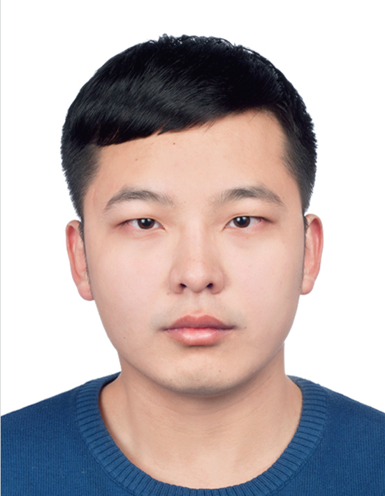

|
 |
Zhen Zhuang, Ph.D. Student |
I am currently a Ph.D. student at the Department of Computer Science and Engineering, The Chinese University of Hong Kong (CUHK), under the supervision of Prof. Tsung-Yi Ho since Fall 2021.
Electronic Design Automation (EDA)
EDA for 2.5D/3D Packaging
Physical Design Automation
AI for EDA
Computer Architecture
Chiplet Architecture Exploration
[1] Zhen Zhuang, Bei Yu, Kai-Yuan Chao, and Tsung-Yi Ho, “Multi-Package Co-Design for Chiplet Integration,” in Proceedings of IEEE/ACM International Conference on Computer-Aided Design (ICCAD), no. 114, pp. 1-9, 2022.
[2] Zhen Zhuang, Genggeng Liu, Tsung-Yi Ho, Bei Yu, and Wenzhong Guo, “TRADER: A Practical Track-Assignment-Based Detailed Router”, in Proceedings of IEEE/ACM Design, Automation and Test in Europe (DATE), pp. 766-771, 2022.
[3] Yidan Jing, Liliang Yang, Zhen Zhuang, Genggeng Liu, Xing Huang, Wen-Hao Liu, and Ting-Chi Wang, “SPTA: A Scalable Parallel ILP-Based Track Assignment Algorithm with Two-Stage Partition,” in Proceedings of IFIP/IEEE International Conference on Very Large Scale Integration (VLSI-SoC), pp. 1-6, 2022.
[4] Zhen Zhuang, Xing Huang, Genggeng Liu, Wenzhong Guo, Weikang Qian, and Wen-Hao Liu, “ALIFRouter: A Practical Architecture-Level Inter-FPGA Router for Logic Verification”, in Proceedings of IEEE/ACM Design, Automation and Test in Europe (DATE), pp. 1570-1573, 2021.
[5] Xinghai Zhang, Zhen Zhuang, Genggeng Liu, Xing Huang, Wen-Hao Liu, Wenzhong Guo, and Ting-Chi Wang, “MiniDelay: Multi-Strategy Timing-Aware Layer Assignment for Advanced Technology Nodes”, in Proceedings of IEEE/ACM Design, Automation and Test in Europe (DATE), pp. 586-591, 2020.
[6] Zhen Zhuang, Genggeng Liu, Xing Huang, Xiaotao Jia, Wen-Hao Liu, and Wenzhong Guo, “MSFRoute: Multi-Stage FPGA Routing for Timing Division Multiplexing Technique”, in Proceedings of ACM Great Lakes Symposium on VLSI (GLSVLSI), pp. 107-112, 2020.
[7] Genggeng Liu, Zhen Zhuang, Wenzhong Guo, and Ting-Chi Wang, “RDTA: An Efficient Routability-Driven Track Assignment Algorithm”, in Proceedings of ACM Great Lakes Symposium on VLSI (GLSVLSI), pp. 315-318, 2019.
[1] Genggeng Liu, Zhisheng Chen, Zhen Zhuang, Wenzhong Guo, and Guolong Chen, “A Unified Algorithm Based on HTS and Self-adapting PSO for the Construction of Octagonal and Rectilinear SMT”, Soft Computing, vol. 24, no. 6, pp. 3943-3961, 2020.
[2] Genggeng Liu, Weida Zhu, Saijuan Xu, Zhen Zhuang, Yeh-Cheng Chen, and Guolong Chen, “Efficient VLSI Routing Algorithm Employing Novel Discrete PSO and Multi-Stage Transformation”, Journal of Ambient Intelligence and Humanized Computing, 2020.
Ph.D. Student, Department of Computer Science and Engineering, The Chinese University of Hong Kong, Aug. 2021 - Present
M.E., College of Mathematics and Computer Science, Fuzhou University, Sep. 2018 - Mar. 2021
B.E., College of Mathematics and Computer Science, Fuzhou University, Sep. 2014 - Jul. 2018
Research Intern, National Tsing Hua University, Jul. 2019 - Aug. 2019
Research Intern, National Tsing Hua University, Apr. 2018 - Jun. 2018
ACM Transactions on Design Automation of Electronic Systems (TODAES)
Integration, the VLSI Journal
Spring 2023: CENG5270 EDA for Physical Design of Digital Systems
Fall 2022: ENGG2440A Discrete Mathematics for Engineers
Spring 2022: CSCI3180 Principles of Programming Languages
Fall 2021: ENGG2440A Discrete Mathematics for Engineers
Full Postgraduate Studentship, CUHK, 2021-2025
Outstanding Master Thesis Award, FZU, 2021
Third Place Award at ISPD Contest, ISPD, 2019
Honorable Mention Award at CAD Contest, ICCAD, 2019
Third Place Award at ISPD Contest, ISPD, 2018
Outstanding Bachelor Thesis Award, FZU, 2018